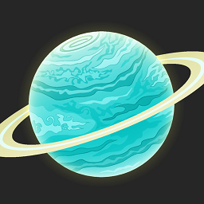

<< Назад |
- | На главную |
- | Вперёд >> |
| - | ||||
|  | Размер (радиус) | 25 362 км | ||
| Температура | Средняя температура составляет -195°C) | |||
| Масса | 8,681E25 кг | |||
| Ускорение свободного падения | 8,87 м/с² | |||
| Возраст | 4,503E9 лет | |||
| Растояние до Земли | Расстояние от Урана до Земли меняется от 2,6 до 3,15 млрд км. | |||
| Растояние до Солнца | 2,8 млрд км | |||
| Плотность | 1,27 г/см3 | |||
| Продолжительность суток | 0 д 17 часов 14 минут. | |||